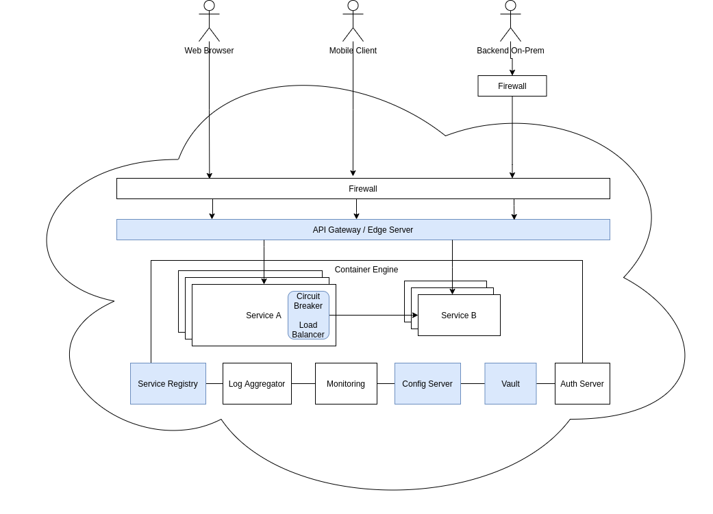
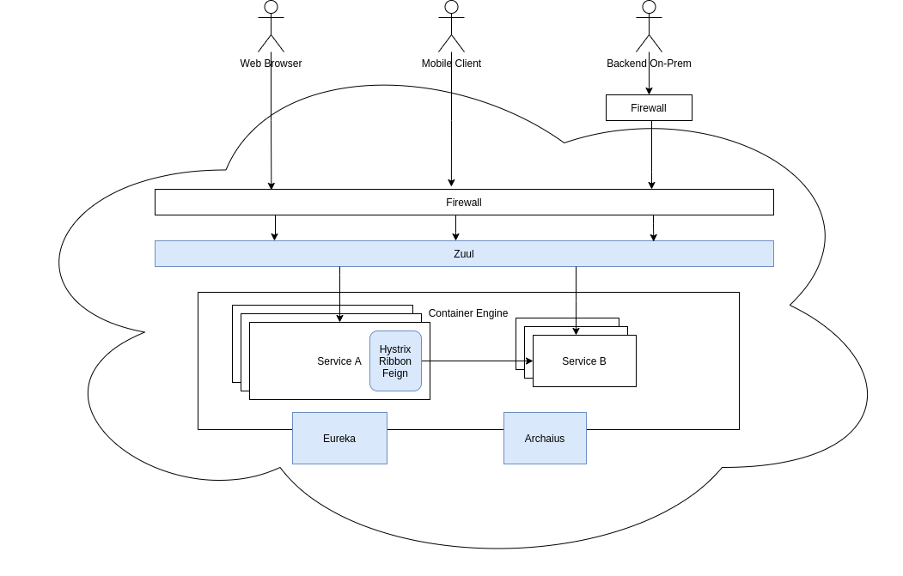

Technology Stack für verteilte Anwendungen
Realisierung erprobter Patterns
Praxistauglich unter Hochlast
Heute: größtenteils im Wartungsmodus
Lektion 5 - Spring Cloud
In den Wolken
Stark verteilte Anwendungen
Resilienz: Timeout, Retry, Failover, Circuit Breaker
Security: Authentifizierung, Autorisierung, Single Sign On (SSO)
Monitoring & Logging
Konfigurationsmanagement
Dynamische Umgebung
Service Discovery (client-side vs. server-side)
Load Balancing (client-side vs. server-side)
Konsolidierte Sicht
API Gateway / Edge Server (Reverse Proxy, Routing)
Exemplarische Systemarchitektur

Netflix OSS
Netflix OSS
Eureka
Service Discovery
Alternativen: Consul, Zookeeper, etcd, Kubernetes
Hystrix
Circuit Breaker
Alternative: Spring Cloud Circuit Breaker + Resilience4j
Ribbon
Client-side Load Balancing
Künftige Alternative: Spring Cloud Load Balancer
Netflix OSS
Feign
Deklarativer REST Client
Alternative: Spring Web (RestTemplate)
Zuul
API Gateway
Alternative: Spring Cloud Gateway
Archaius
Konfigurationsmanagement
Alternative: Spring Cloud Config
Systemarchitektur mit Netflix OSS

Spring Cloud

Erweiterung(en) von Spring Boot für verteilte Anwendungen
Microservices & Cloud
Starter mit gemeinsamem Release Train
Eigenes Maven Parent (analog Spring Boot)
Unterstützung für Netflix OSS: Spring Cloud Netflix
Aktueller Release Train: 2021.0.x (a.k.a. Jubilee)
Spring Cloud
Spring Cloud Netflix
Integration des Netflix OSS Stacks
Individuelle Starter für einzelne Libraries
Links
https://dzone.com/articles/the-future-of-spring-cloud-microservices-after-net
https://www.north-47.com/knowledge-base/scaling-microservices-with-spring-cloud-netflix/
https://panonit.com/blog/microservices-java-spring-cloud-and-netflix-overview-part-1
https://www.objectivity.co.uk/blog/microservice-architecture-based-on-spring-cloud-netflix/
Spring Cloud CircuitBreaker
Vereinheitlichte API für Circuit Breaker
Austauschbare Implementierungen
Hystrix
Resilience4j
Spring Retry
Links
Spring Cloud Vault
Integration von HashiCorp Vault
Verwendung von Secrets in Properties
Unterstützung dynamischer Credentials
Links
Spring Cloud Config
Zentrales Konfigurationsmanagement
REST Interface
Verschlüsselung von Properties
Links
Spring Cloud Bus
Verbindung von Spring Boot Services über Message Bus
AMQP (z.B. RabbitMQ)
Apache Kafka
Verteilung und Aktualisierung von Konfigurationen
Links
Übung 1/6 - Spring Cloud Netflix Eureka (Server)
Setzen Sie einen Spring Cloud Eureka Server auf:
Erstellen Sie ein neues Projekt mit dem Spring Initializr und wählen Sie dabei die Dependency
Eureka Serveraus.Versehen Sie die Application-Klasse mit der Annotation
@EnableEurekaServer.Setzen Sie in der
application.propertiesdie Einstellungeneureka.client.registerWithEurekaundeureka.client.fetchRegistryauffalsesowieserver.portauf8761.Starten Sie die Anwendung.
Übung 2/6 - Spring Cloud Netflix Eureka (Clients)
Registrieren Sie
AbrechnungServiceundZugangskontrollServicebeim Eureka Server:Fügen Sie den spring-cloud-starter-netflix-eureka-client als Maven Dependency der jeweiligen POM hinzu.
Ergänzen Sie die jeweiligen
application.propertiesum die Einstellungenspring.application.name(Wert:zugangskontroll-servicebzw.abrechnung-service) undeureka.client.serviceUrl.defaultZone(Wert:http://localhost:8761/eureka)Starten Sie die beiden Services und betrachten Sie die Logs.
Rufen Sie das Eureka Dashboard unter
http://localhost:8761auf. Welche Informationen erhalten Sie?
Übung 3/6 - Spring Cloud Netflix Hystrix
Erweitern Sie den Fallback-Mechanismus in der Klasse ExitGrantServiceImpl des ZugangskontrollService durch einen Spring Cloud Circuit Breaker:
Fügen Sie spring-cloud-starter-netflix-hystrix als Dependency der POM hinzu.
Lassen Sie sich eine
CircuitBreakerFactorymittels Autowiring injekten.Erstellen Sie über die Factory einen
CircuitBreakerund wrappen Sie damit den Aufruf des PaymentClients. Referenzieren Sie dabei den bereits bestehenden Fallback.Testen Sie den Circuit Breaker, indem Sie den
AbrechnungServicestoppen und eine Anfrage an denZugangskontrollServicesenden.
Übung 4/6 - Spring Cloud Config (Server)
Setzen Sie einen Spring Cloud Config Server auf:
Erstellen Sie ein neues Projekt
config-servermit dem Spring Initializr und wählen Sie dabei die DependenciesConfig ServerundSpring Webaus.Erstellen Sie mittels
git initein neues Git Repository.Verschieben Sie die
application.propertiesvonZugangskontrollServiceundAbrechnungService(alszugangskontroll-service.propertiesbzw.abrechnung-service.properties) dort hinein und committen Sie.Setzen Sie die Property
server.portin derapplication.propertiesdesconfig-serverauf8888und verweisen Sie über die Propertyspring.cloud.config.server.git.uriauf das gerade erstellte Git Repository (Wert:file://path/to/repo).Versehen Sie die Application Klasse mit der Annotation
@EnableConfigServer.Starten Sie die Anwendung und rufen Sie
http://localhost:8888/abrechnung-service.propertiesundhttp://localhost:8888/zugangskontroll-service.propertiesauf.
Übung 5/6 - Spring Cloud Config (Clients)
Binden Sie AbrechnungService und ZugangskontrollService an den Config Server an:
Fügen Sie spring-cloud-starter-config und spring-cloud-starter-bootstrap als Dependencies den jeweiligen POMs hinzu.
Legen Sie jeweils eine
bootstrap.propertiesan und setzen Siespring.application.nameaufabrechnung-servicebzw.zugangskontroll-servicesowiespring.cloud.config.uriaufhttp://localhost:8888.Starten Sie die Services erneut und betrachten Sie die Logs. Welche Klasse ist nun für das Laden der Properties zuständig?
Übung 6/6 - Spring Cloud Gateway, Spring Cloud Bus
Bonusaufgaben:
Richten Sie ein Spring Cloud Gateway mit geeigneten Routen für
AbrechnungServiceundZugangskontrollServiceein.Stellen Sie die Anbindung zwischen
AbrechnungServicebzw.ZugangskontrollServiceund dem Config Server auf Spring Cloud Bus um. Den hierfür benötigten Message Broker (z.B. RabbitMQ) können Sie über Docker hochfahren.
Zusammenfassung Spring Cloud
Erweiterung(en) von Spring Boot für verteilte Anwendungen
Fokus: Microservices & Cloud
Eigener Release Train
Vorreiter: Netflix OSS
Integration mit etablierten Libraries (u.a. Netflix OSS, Resilience4j)
Starter für verschiedene Einsatzgebiete (z.B. Circuit Breaker)
Abschluss
Fragen…
Anregungen…
Meinung…
Feedback…